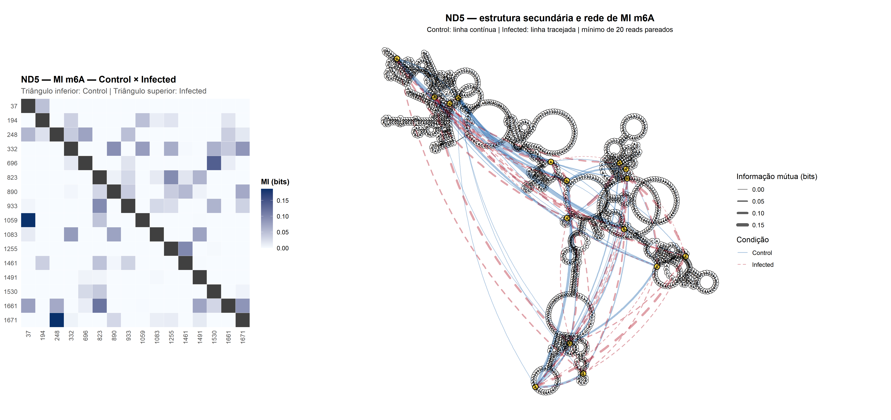
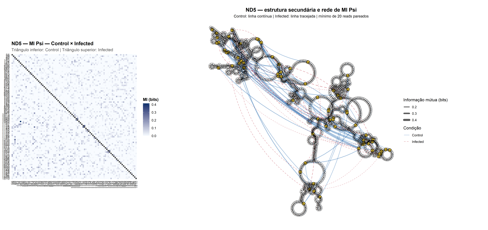
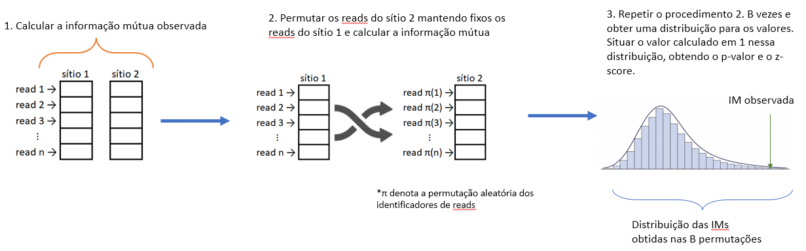
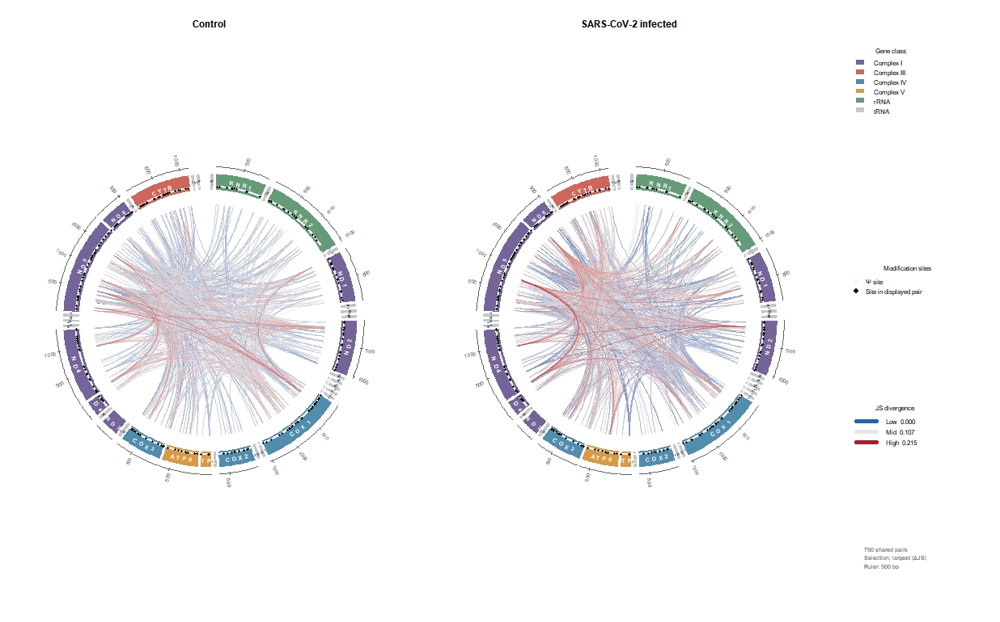

Perfil Epitranscriptômico do RNA Mitocondrial (mtRNA)
Dependência intramolecular e divergência distribucional de modificações epitranscriptômicas
03/09/2026
Resumo
Este relatório descreve a estratégia metodológica desenvolvida para investigar a organização de modificações epitranscriptômicas no RNA mitocondrial (mtRNA) a partir de dados de direct RNA sequencing (DRS) com resolução de molécula única.
A abordagem não se restringe à identificação de sítios
individualmente modificados. Busca-se caracterizar padrões de
associação entre diferentes classes de modificação,
dependência estatística entre sítios de uma mesma
modificação e alterações na organização dos perfis
probabilísticos entre as condições Control e
Infected.
A estratégia analítica é organizada em duas escalas complementares:
- escala intramolecular/intragênica, na qual dois sítios são comparados a partir das moléculas (reads) que os cobrem simultaneamente;
- escala distribucional/intergênica, na qual as distribuições marginais das probabilidades de modificação são comparadas sem exigir correspondência molécula a molécula.
1 Contexto biológico
O genoma mitocondrial humano é transcrito predominantemente na forma de precursores policistrônicos extensos, posteriormente processados em rRNAs, tRNAs e mRNAs mitocondriais. Nesse contexto, modificações epitranscriptômicas constituem uma camada adicional de regulação, potencialmente associada à estabilidade, à conformação estrutural, ao processamento e à função dos RNAs mitocondriais.
1.1 Origem dos dados experimentais
As análises utilizam dados públicos de Oxford Nanopore direct
RNA sequencing (DRS) obtidos em células
Calu-3, linhagem epitelial humana de adenocarcinoma
pulmonar amplamente empregada como modelo de infecção por SARS-CoV-2. O
conjunto experimental foi originalmente produzido por Chang et
al. (2021) no estudo Transcriptional and epi-transcriptional
dynamics of SARS-CoV-2 during cellular infection. Neste trabalho
são comparadas as condições Control e
Infected, a partir do experimento
depositado no BioProject PRJNA675370, considerando as
amostras de Calu-3 correspondentes ao ponto de 48 h pós-infecção
selecionado para a análise.
A molécula de RNA nativo sequenciada diretamente pelo nanoporo constitui a unidade observacional molecular das análises apresentadas a seguir. O objetivo desta etapa não é reprocessar o sinal elétrico bruto, mas investigar a organização estatística das probabilidades de modificação previamente inferidas em nível de read.
1.2 Predições de modificações epitranscriptômicas
As probabilidades de modificação das três modificações consideradas no projeto são provenientes de métodos computacionais especializados para dados de DRS. Foram consideradas ferramentas diferentes para cada modificação.
| Modificação | Ferramenta |
|---|---|
| - m6A — N6-metiladenosina | m6Anet |
| - m5C — 5-metilcitosina | CHEUI |
| - Ψ — pseudouridina | TandemMod |
O m6Anet utiliza uma arquitetura baseada em multiple instance learning para inferir m6A a partir de sinais de DRS, produzindo estimativas em nível molecular e de sítio (Hendra et al., 2022). O CHEUI emprega uma estratégia de redes neurais em dois estágios para identificar m6A e m5C em moléculas individuais, estimar a estequiometria por sítio e realizar comparações entre condições (Acera Mateos et al., 2024). O TandemMod, por sua vez, utiliza deep learning e transfer learning para a identificação de múltiplos tipos de modificação em DRS, incluindo m6A, m5C e pseudouridina (Wu et al., 2024). A definição da ferramenta foi apoiada por análises de parâmetros de predição de cada ferramenta a cada modificação (Luo et al., 2026).
Em análises complementares de sensibilidade e de comparação entre modificações, também foram produzidas predições de m6A com o TandemMod e predição de m5C com o m6Anet. Como os escores são gerados por modelos distintos, seus valores absolutos não são considerados, a priori, probabilidades calibradas em uma escala diretamente intercambiável entre ferramentas.
Foram considerados apenas alinhamentos com MAPQ > 20, conforme atribuído pelo Minimap2. Em uma interpretação nominal da escala Phred, esse limiar corresponde a uma probabilidade de erro de posicionamento inferior a aproximadamente 1%. O filtro reduz a contribuição de alinhamentos ambíguos e aumenta a confiabilidade da atribuição das probabilidades de modificação às respectivas posições de referência.
A disponibilidade de probabilidades de modificação em nível de read permite ultrapassar a análise exclusivamente marginal por sítio. Para um sítio \(i\) observado em uma molécula \(r\), a evidência probabilística de modificação é representada por
\[ P_{ir}=P(M_i=1\mid r). \]
Essa representação permite formular perguntas distintas conforme exista — ou não — cobertura molecular conjunta entre os sítios comparados.
2 Estrutura da estratégia analítica
A metodologia é estruturada em torno de três questões analíticas principais.
Entre modificações distintas: as probabilidades atribuídas a dois tipos de modificação apresentam variação conjunta nas mesmas moléculas? Essa questão é investigada por medidas de correlação.
Entre sítios de uma mesma modificação: a probabilidade observada em um sítio reduz a incerteza sobre a probabilidade observada em outro sítio na mesma molécula? Essa dependência é quantificada por informação mútua, estimada pelo método de Kraskov–Stögbauer–Grassberger (KSG).
Na ausência de cobertura molecular conjunta
suficiente: a relação entre as distribuições marginais de
probabilidade de dois sítios se altera entre Control e
Infected? Nesta versão, essa questão é examinada por meio
da divergência de Jensen–Shannon (JS).
3 Associação entre diferentes classes de modificação
A análise de associação entre modificações parte da hipótese de que diferentes marcas epitranscriptômicas podem apresentar padrões coordenados de ocorrência ou, alternativamente, relações de exclusão preferencial nas mesmas moléculas de RNA. Evidências recentes obtidas por DRS em resolução de molécula única sustentam a pertinência dessa abordagem. O CHEUI, ao inferir simultaneamente m6A e m5C, identificou coocorrência dessas modificações acima do esperado ao acaso em diferentes transcriptomas (Acera Mateos et al., 2024). Em direção complementar, Bansal et al. (2026) observaram que a redução da pseudouridilação após depleção de PUS7 ou DKC1 foi acompanhada por aumento global de m6A e m5C, resultado interpretado pelos autores como compatível com uma possível relação regulatória antagônica entre Ψ e essas modificações.
Esses achados motivam, neste projeto, a investigação de padrões de variação conjunta entre probabilidades de modificação observadas nas mesmas moléculas. A primeira medida utilizada para formalizar essa relação é a covariância.
3.1 Covariância
Para duas variáveis contínuas \(X\) e \(Y\), a covariância amostral é dada por
\[ \operatorname{Cov}(X,Y)= \frac{1}{N-1} \sum_{i=1}^{N}(x_i-\bar{x})(y_i-\bar{y}). \]
Neste projeto, \(x_i\) e \(y_i\) representam probabilidades atribuídas a dois tipos de modificação em uma mesma molécula de RNA. Covariância positiva indica tendência de variação conjunta na mesma direção; covariância negativa indica tendência de variação em direções opostas. A magnitude, entretanto, permanece dependente da escala e da dispersão das variáveis.
Para obter uma medida adimensional e mais comparável entre diferentes pares de sítios e modificações, utiliza-se a forma padronizada da covariância: o coeficiente de correlação.
3.2 Correlação de Pearson
O coeficiente de correlação de Pearson corresponde à covariância normalizada pelos desvios-padrão de \(X\) e \(Y\):
\[ r= \frac{\operatorname{Cov}(X,Y)} {s_Xs_Y} = \frac{ \sum_{i=1}^{N}(x_i-\bar{x})(y_i-\bar{y}) }{ \sqrt{\sum_{i=1}^{N}(x_i-\bar{x})^2} \sqrt{\sum_{i=1}^{N}(y_i-\bar{y})^2} }. \]
3.3 Correlação de Spearman
A medida de dependência efetivamente utilizada é a correlação de Spearman, equivalente à correlação de Pearson aplicada aos postos das observações:
\[ \rho_s=\operatorname{cor}\{R(X),R(Y)\}. \] O coeficiente \(r\) varia entre \(-1\) e \(1\). No caso da correlação de Pearson, valores positivos indicam associação linear na mesma direção, enquanto valores negativos indicam associação linear em direções opostas. No contexto epitranscriptômico, esses padrões são interpretados prioritariamente como covariação positiva ou covariação negativa das probabilidades nas moléculas compartilhadas. Quando sustentados por evidências adicionais, podem ser compatíveis com coocorrência preferencial, exclusão ou estados moleculares alternativos, sem que a correlação, isoladamente, estabeleça um mecanismo bioquímico.
O coeficiente de Spearman preserva a interpretação direcional do sinal, mas quantifica associação monotônica em vez de restringir-se à relação linear. Por operar sobre postos, é menos sensível à escala dos escores e a valores extremos, sendo particularmente útil quando a relação entre as probabilidades de modificação apresenta não linearidade, conservando algum nível de compatibilidade entre postos.
Interpretação. Correlações positivas e negativas são tratadas, respectivamente, como evidência de covariação na mesma direção ou em direções opostas entre probabilidades de modificação nas moléculas compartilhadas. Em contextos biologicamente plausíveis, esses padrões podem ser compatíveis com coocorrência preferencial, antagonismo estatístico ou estados moleculares alternativos. Entretanto, correlação e covariância não demonstram, por si sós, interação bioquímica direta nem relação causal.
3.4 Exemplos de padrões de associação
3.4.1 m5C × m6A

Heatmap da correlação de Spearman entre as probabilidades de m5C e m6A nas moléculas compartilhadas, para o intervalo mitocondrial 4714–5185.
3.4.2 Ψ × m5C

Heatmap da correlação de Spearman entre as probabilidades de pseudouridina (Ψ) e m5C, para o intervalo 12605–12813, localizado no gene ND5.
3.4.3 Ψ × m6A

Heatmap da correlação de Spearman entre as probabilidades de pseudouridina (Ψ) e m6A, para o intervalo 13691–14477, abrangendo a porção terminal de ND5 e parte de ND6.
4 Dependência entre sítios de uma mesma modificação: MI-KSG
4.1 Informação mútua
Para variáveis contínuas \(X\) e \(Y\), a informação mútua pode ser escrita como (Cover & Thomas, 2006)
\[ I(X;Y) = \int\!\!\int f_{XY}(x,y) \log \frac{f_{XY}(x,y)}{f_X(x)f_Y(y)} \,dx\,dy. \]
Equivalentemente,
\[ I(X;Y)=H(X)+H(Y)-H(X,Y). \]
Sob independência,
\[ f_{XY}(x,y)=f_X(x)f_Y(y) \]
e, consequentemente,
\[ I(X;Y)=0. \]
Ao contrário da correlação, a informação mútua não possui sinal. Valores mais elevados indicam maior dependência estatística entre as variáveis, mas não classificam essa dependência como positiva ou negativa e tampouco identificam, isoladamente, sua forma funcional.
4.2 Estimador KSG
O estimador de Kraskov–Stögbauer–Grassberger utiliza distâncias a \(k\) vizinhos mais próximos no espaço conjunto para estimar informação mútua entre variáveis contínuas sem discretização prévia (Kraskov et al., 2004). Para a variante KSG-1, uma forma do estimador é
\[ \widehat I_{KSG} = \psi(k)+\psi(N) - \frac{1}{N} \sum_{i=1}^{N} \left[ \psi\{n_x(i)+1\} + \psi\{n_y(i)+1\} \right], \]
em que \(k\) é o número de vizinhos mais próximos, \(N\) é o número de observações moleculares pareadas disponíveis para o par de sítios e \(\psi\) é a função digama.
Quando o estimador retorna MI em nats, a conversão para bits é
\[ I_{bits}=\frac{I_{nats}}{\ln 2}. \]
Interpretação biológica. MI elevada entre dois sítios de uma mesma modificação indica redução da incerteza sobre a probabilidade observada em um sítio quando se conhece a probabilidade observada no outro, considerando as mesmas moléculas. A medida é capaz de capturar dependências não lineares, mas não informa o sentido da associação nem estabelece causalidade.
4.3 Representação intragênica da dependência: heatmap e estrutura secundária
As visualizações intragênicas integram duas representações complementares da dependência entre sítios. O heatmap sintetiza as estimativas pareadas de informação mútua entre os sítios retidos para cada gene, permitindo identificar regiões de maior ou menor dependência estatística. A projeção sobre a estrutura secundária acrescenta contexto estrutural à mesma rede de dependências, sem alterar a medida de MI utilizada na análise.
A estrutura secundária foi predita com o programa
RNAfold, integrante do ViennaRNA Package,
e representada em notação dot-bracket (Lorenz et al., 2011). As
coordenadas bidimensionais utilizadas na visualização são obtidas com
RNAplot. Os sítios sobrepostos à estrutura são selecionados
segundo os critérios operacionais definidos na rotina de análise. Para
m6A, foi adotado limiar de taxa estimada de modificação superior a 20%;
para pseudouridina (Ψ), foi adotado limiar de 70%. Esses valores devem
ser interpretados como critérios analíticos de seleção para a
visualização, e não como fronteiras biológicas universais entre
sítios modificados e não modificados.
A retenção de sítios com estequiometria intermediária é biologicamente plausível. Em um preprint recente, Chan, Barbaric e Thomson (2026) observaram, em rRNA, durante diferenciação de células-tronco embrionárias humanas, que sítios com níveis intermediários de modificação (15–85%) concentravam numerosas alterações diferenciais, enquanto sítios raramente modificados (<15%) ou quase constitutivamente modificados (>85%) apresentavam menor variação entre estados celulares. Esse resultado fornece um precedente para a relevância funcional potencial de estados subestequiométricos, mas não deve ser extrapolado como justificativa direta para os limiares empregados neste estudo, uma vez que se refere a outro tipo de RNA, outro contexto biológico e outras classes de modificação.
Na representação estrutural, a sequência e a estrutura em notação
dot-bracket são convertidas em coordenadas por
RNAplot; em seguida, são representados a estrutura da
molécula, os pareamentos de bases, os sítios selecionados e as arestas
correspondentes às dependências estimadas por MI. A espessura das
arestas expressa a magnitude da informação mútua. Essa projeção deve ser
interpretada como uma visualização contextual da dependência
estatística: proximidade no desenho bidimensional ou presença de uma
aresta de MI não constituem evidência, por si sós, de contato físico
direto ou interação molecular causal. São plotadas na respresentação
estrutural apenas as 20 maiores magnitudes de dependendência.
4.3.1 m6A — ND5

Representação intragênica de m6A no gene selecionado, integrando a matriz de dependência entre sítios e, quando disponível no arquivo exportado, a projeção das associações de MI sobre a estrutura secundária predita.
4.3.2 Ψ — ND5

Representação intragênica de pseudouridina (Ψ) no gene selecionado, incorporada a partir do produto gráfico persistido pela rotina de análise.
5 Avaliação de significância por teste de permutação
Uma estatística observada diferente de zero não é suficiente para demonstrar que a correspondência molécula a molécula contém estrutura informacional além do esperado ao acaso. O teste de permutação preserva as distribuições marginais, mas rompe deliberadamente o pareamento entre as observações dos dois sítios, construindo uma distribuição nula compatível com ausência de dependência associada ao pareamento molecular.
Se a estatística observada é
\[ T_{obs}=T(X,Y), \]
cada permutação produz
\[ T^{(b)}=T\left(X,\pi_b(Y)\right), \]
em que \(\pi_b\) representa uma permutação aleatória dos valores de \(Y\).
Para estatísticas em que valores elevados constituem evidência de dependência, como a MI, um estimador do valor de \(p\) unilateral é
\[ p_{perm} = \frac{ 1+\sum_{b=1}^{B}\mathbf{1}\left(T^{(b)}\geq T_{obs}\right) }{B+1}. \]
Para estatísticas com sinal, como correlações, a definição da região crítica deve refletir a hipótese formulada — por exemplo, mediante teste bilateral baseado em \(|T|\) quando a direção não é especificada a priori. Em análises envolvendo grande número de pares, os valores de \(p\) devem ser acompanhados por procedimento de controle de múltiplas comparações, como o método de Benjamini–Hochberg (Benjamini & Hochberg, 1995).
5.1 Esquema do teste de permutação
A figura abaixo sintetiza o procedimento. Inicialmente, calcula-se a estatística observada utilizando o pareamento original entre as moléculas. Em seguida, mantêm-se fixos os valores do primeiro sítio e permuta-se aleatoriamente a correspondência das observações do segundo sítio, rompendo a associação molecular entre ambos. O procedimento é repetido \(B\) vezes para formar a distribuição nula empírica.

Além do valor de \(p\) empírico, a posição da estatística observada em relação à distribuição permutada pode ser resumida pelo escore
\[ z= \frac{ T_{obs}-\overline{T}_{perm} }{ \sigma_{perm} }, \]
em que \(\overline{T}_{perm}\) e \(\sigma_{perm}\) são, respectivamente, a média e o desvio-padrão das estatísticas obtidas nas \(B\) permutações. Para MI, valores positivos elevados de \(z\) indicam que a dependência observada excede aquela esperada sob a hipótese nula construída pela permutação do pareamento molecular.
6 Limitação imposta pela cobertura molecular compartilhada
A análise intramolecular requer que ambos os sítios sejam observados na mesma molécula. Para um par \((i,j)\), define-se a cobertura molecular compartilhada como
\[ N^{shared}_{ij} = \#\{r: i\in r \;\text{e}\; j\in r\}. \]
À medida que aumenta a distância entre os sítios, tende a diminuir o número de reads capazes de cobri-los simultaneamente. A redução de \(N^{shared}_{ij}\) aumenta a incerteza das estimativas de correlação e MI, especialmente em comparações de maior alcance ao longo do transcrito, e motiva a adoção de uma segunda escala de análise que não dependa do pareamento molécula a molécula.
7 Comparação distribucional por Jensen–Shannon
Quando a cobertura conjunta é insuficiente para observar dois sítios nas mesmas moléculas, cada sítio pode ser representado pela distribuição marginal das probabilidades estimadas nas reads que o cobrem. Essa mudança de representação permite comparações de maior alcance, mas implica uma mudança conceitual importante: a análise deixa de medir dependência intramolecular e passa a quantificar semelhança ou divergência entre distribuições marginais.
Para duas distribuições discretizadas \(P\) e \(Q\),
\[ M=\frac{P+Q}{2}. \]
A divergência de Jensen–Shannon é
\[ JS(P,Q) = \frac{1}{2}D_{KL}(P\|M) + \frac{1}{2}D_{KL}(Q\|M), \]
com
\[ D_{KL}(P\|Q) = \sum_x P(x)\log\frac{P(x)}{Q(x)}. \]
A divergência de Jensen–Shannon é simétrica e permanece finita mesmo quando uma das distribuições atribui probabilidade nula a regiões ocupadas pela outra. Na implementação utilizada neste projeto, as distribuições são discretizadas em uma grade comum de bins e recebem pseudocontagem, permitindo derivar também versões normalizadas, a distância de JS e transformações de similaridade. A interpretação comparativa exige que a discretização, a pseudocontagem e a base do logaritmo sejam mantidas constantes entre sítios e condições.
8 Alteração da
divergência entre Control e Infected: \(\Delta JS\)
Para cada par de sítios presente nas duas condições,
\[ \Delta JS = JS_{Infected} - JS_{Control}. \]
A interpretação do sinal é, portanto:
- \(\Delta JS>0\): aumento da divergência entre as distribuições marginais do par na condição infectada;
- \(\Delta JS<0\): redução da divergência, isto é, maior similaridade distribucional na condição infectada;
- \(\Delta JS\approx0\): estabilidade aproximada da divergência entre as condições.
8.1 Heatmap por combinações gênicas
9 Representação da divergência de Jensen–Shannon
O diagrama circular sintetiza relações distribucionais de longo
alcance ao longo do transcriptoma mitocondrial. A rotina foi estruturada
para que Control e Infected representem
o mesmo conjunto de pares e utilizem uma escala
cromática comum para comparação visual direta entre as
condições.
Para js_divergence, valores menores indicam maior
similaridade entre as distribuições marginais, enquanto valores maiores
indicam maior divergência.
Circos comparativo de Jensen–Shannon: Control versus Infected.

A estratégia distingue explicitamente dois níveis de informação. Na escala intramolecular, a correspondência entre as mesmas moléculas permite investigar covariação e dependência entre sítios por correlação e MI-KSG. Na escala intergênica, a JS permite comparar perfis marginais de probabilidade mesmo quando a cobertura molecular conjunta é insuficiente para sustentar o pareamento read-a-read.
10 Resultados
(Em desenvolvimento)
Referências
Acera Mateos, P., Sethi, A. J., Ravindran, A., et al. (2024). Prediction of m6A and m5C at single-molecule resolution reveals a transcriptome-wide co-occurrence of RNA modifications. Nature Communications, 15, 3899. https://doi.org/10.1038/s41467-024-47953-7
Bansal, M., Gupta, A., Ding, J., et al. (2026). Integrative analysis of nanopore direct RNA sequencing data reveals a global impact of pseudouridylation on m6A and m5C modifications. npj Precision Oncology, 10, 52. https://doi.org/10.1038/s41698-026-01278-4
Benjamini, Y., & Hochberg, Y. (1995). Controlling the false discovery rate: A practical and powerful approach to multiple testing. Journal of the Royal Statistical Society: Series B, 57(1), 289–300. https://doi.org/10.1111/j.2517-6161.1995.tb02031.x
Chan, T. W. Y., Barbaric, I., & Thomson, E. E. (2026). Integrated sequencing approach to probe rRNA modification landscape during human embryonic stem cell differentiation. bioRxiv [Preprint], 2026.08.10.743918. https://doi.org/10.64898/2026.08.10.743918
Chang, J. J.-Y., Rawlinson, D., Pitt, M. E., et al. (2021). Transcriptional and epi-transcriptional dynamics of SARS-CoV-2 during cellular infection. Cell Reports, 35(6), 109108. https://doi.org/10.1016/j.celrep.2021.109108
Cover, T. M., & Thomas, J. A. (2006). Elements of information theory (2nd ed.). Wiley.
Hendra, C., Pratanwanich, P. N., Wan, Y. K., et al. (2022). Detection of m6A from direct RNA sequencing using a multiple instance learning framework. Nature Methods, 19, 1590–1598. https://doi.org/10.1038/s41592-022-01666-1
Kraskov, A., Stögbauer, H., & Grassberger, P. (2004). Estimating mutual information. Physical Review E, 69, 066138. https://doi.org/10.1103/PhysRevE.69.066138
Lorenz, R., Bernhart, S. H., Höner zu Siederdissen, C., et al. (2011). ViennaRNA Package 2.0. Algorithms for Molecular Biology, 6, 26. https://doi.org/10.1186/1748-7188-6-26
Luo, T., Xu, M., Wang, M., Chen, F., & Shi, J. (2026). Systematic evaluation of computational tools for multitype RNA modification detection using nanopore direct RNA sequencing. Nature Methods, 23, 438–450. https://doi.org/10.1038/s41592-025-02974-y
Wu, Y., Shao, W., Yan, M., et al. (2024). Transfer learning enables identification of multiple types of RNA modifications using nanopore direct RNA sequencing. Nature Communications, 15, 4049. https://doi.org/10.1038/s41467-024-48437-4